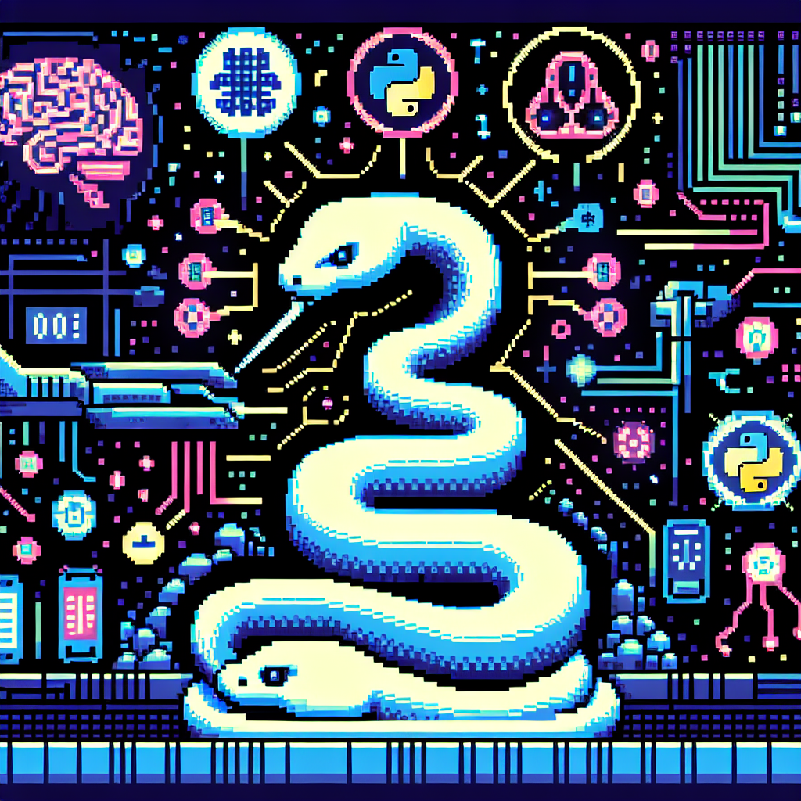

The future of Python and AI
**The Future of Python and AI**
**Tags:** tech, python, coding, AI, machine learning
**Summary:** In this blog post, I discuss the promising future of AI and how Python will continue to play a pivotal role in its development.
---
As a Python instructor deeply entrenched in the coding world, I've had the privilege of witnessing firsthand the rapid evolution of both Python and AI. Python has long been a favorite among developers for its simplicity and robust capabilities, and its synergy with AI and machine learning technologies is only growing stronger. The future holds exciting possibilities for this dynamic duo, and I'd like to share some insights on what we might expect in the coming years.
### The Rise of AI-Powered Solutions
Artificial Intelligence is no longer a concept of the future; it is a reality shaping various industries today. From healthcare to finance, AI-powered solutions are transforming the way we approach problems and create opportunities. Python, with its vast ecosystem of libraries like TensorFlow, Keras, PyTorch, and scikit-learn, has become the go-to language for developing these AI solutions.
### Python's Dominance in Machine Learning
One of the reasons Python is so well-suited for AI and machine learning is its simplicity and readability. This lowers the barrier to entry for newcomers, allowing more people to contribute to the field. Furthermore, Python's extensive libraries and frameworks provide pre-built modules that make it easier to implement complex algorithms and models.
### The Role of Python in Data Science
Data is the backbone of AI, and Python has established itself as a powerhouse in data science. Libraries such as Pandas, NumPy, and Matplotlib enable data scientists to manipulate, analyze, and visualize data efficiently. As AI continues to evolve, the demand for data-driven insights will only increase, solidifying Python's role in data science.
### Innovations on the Horizon
1. **Automated Machine Learning (AutoML):** AutoML aims to automate the end-to-end process of applying machine learning to real-world problems. Python libraries like Auto-sklearn and TPOT are leading the way in making AI more accessible and reducing the time required to develop models.
2. **Explainable AI (XAI):** As AI systems become more complex, understanding their decision-making processes is crucial. Python libraries such as LIME and SHAP are being developed to provide explanations for AI predictions, enhancing transparency and trust.
3. **Edge Computing:** With the rise of IoT devices, processing data at the edge (closer to where it is generated) is becoming increasingly important. Python's lightweight frameworks and compatibility with various hardware platforms make it ideal for developing edge AI solutions.
4. **AI Ethics and Fairness:** Addressing biases and ensuring fairness in AI models is a growing concern. Python libraries like Fairlearn and AIF360 are being developed to help create more ethical AI systems.
### The Community and Collaboration
One of Python's greatest strengths is its vibrant community. The open-source nature of Python fosters collaboration and innovation. Developers from around the world contribute to improving libraries, sharing knowledge, and building tools that push the boundaries of what AI can achieve.
### Conclusion
The future of AI and Python is intertwined, with each driving advancements in the other. As we continue to push the envelope of what is possible with AI, Python will undoubtedly remain at the forefront, empowering developers to create intelligent solutions that shape our world. Whether you are a seasoned developer or just starting your coding journey, now is an exciting time to be a part of the Python and AI community.
Stay curious, keep coding, and embrace the future of AI with Python!
---
Thank you for reading! Feel free to share your thoughts and experiences with Python and AI in the comments below. Let's continue the conversation and explore the future together.
**Jose**
Python Instructor and Coding Enthusiast